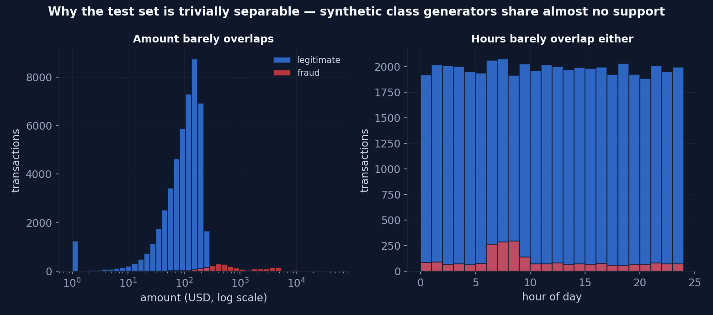

Evaluación del Modelo — y una Advertencia sobre los Puntajes Perfectos
Corrimos el protocolo documentado completo sobre un split held-out. Las métricas volvieron perfectas. Esto es por qué eso es una señal de alarma, no una victoria.
Este capítulo publica la primera evaluación del modelo, siguiendo el protocolo exacto del script de entrenamiento: split estratificado 80/20 (seed 42), el paso documentado de ruido en features y SMOTE solo-en-train, y scoring sobre el 20% intacto (10.000 transacciones). El artefacto de producción no fue reentrenado ni modificado.
La tabla de resultados
| Modelo | Precision @0.5 | Recall @0.5 | F1 @0.5 | PR-AUC |
|---|---|---|---|---|
| Dummy (clase mayoritaria) | 0.000 | 0.000 | 0.000 | 0.048 |
| Regresión Logística | 1.000 | 0.998 | 0.999 | 1.000 |
| Random Forest (200) | 1.000 | 1.000 | 1.000 | 1.000 |
| XGBoost (params de producción) | 1.000 | 1.000 | 1.000 | 1.000 |
ROC-AUC (XGB): 1.000 · CV 5-fold: F1 = 1.000 ± 0.000, PR-AUC = 1.000 ± 0.000 (SMOTE dentro de cada fold).

La advertencia: los puntajes perfectos son una bandera roja
Un modelo que nunca se equivoca en test no es un triunfo — es una medición de cuán lejos están los datos sintéticos de la realidad. La fila de baselines lo confirma: la regresión logística puntúa 0.999. Cuando un modelo lineal iguala al gradient boosting perfectamente, la elección del modelo nunca fue el cuello de botella. Las clases casi no se solapan:

Esta es una de las lecciones más importantes del machine learning aplicado: la evaluación solo puede ser tan honesta como los datos sobre los que corre. Estos números validan que el pipeline está bien cableado — splits, resampling, entrenamiento, inferencia — pero no dicen nada sobre performance de producción contra fraude real, que es ruidoso, adaptativo y sutilmente desbalanceado. Ese hueco es exactamente por qué existe el monitoreo de drift del Capítulo 08, y por qué publicar métricas held-out sobre tráfico real etiquetado es el primer item del roadmap.
Métricas held-out perfectas sobre datos sintéticos prueban corrección de ingeniería, no calidad del modelo. Cualquier portfolio que declare F1 = 1.0 como logro sin esta advertencia te está diciendo que no miró sus propios números de cerca.
La maquinaria igual tuvo que demostrarse
Aun con clases separables, la capa cost-sensitive se ejercitó de punta a punta: falsos negativos valuados a 10× falsos positivos, umbral barrido de 0.05 a 0.95, costo económico minimizado. Con data fácil el umbral óptimo aterriza bajo (0.05) porque el recall es gratis — con data real esta curva se convierte en la herramienta de decisión.


¿El score es honesto? Chequeo de calibración
El camino de serving aplica un suavizado cúbico a las probabilidades crudas (Capítulo 3). Un diagrama de confiabilidad prueba si las probabilidades predichas coinciden con las tasas observadas de fraude — para la salida cruda y para la salida suavizada de serving:

CalibratedClassifierCV) pertenece al pipeline.